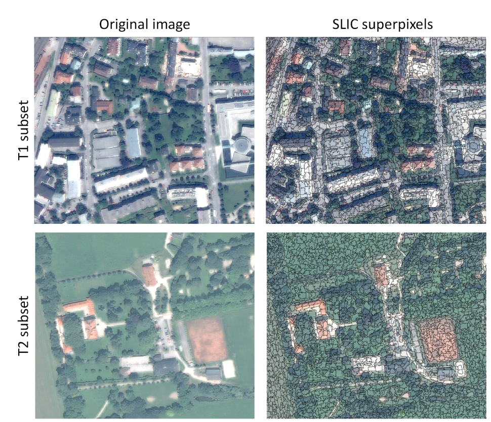
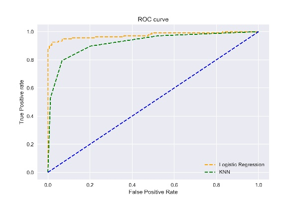
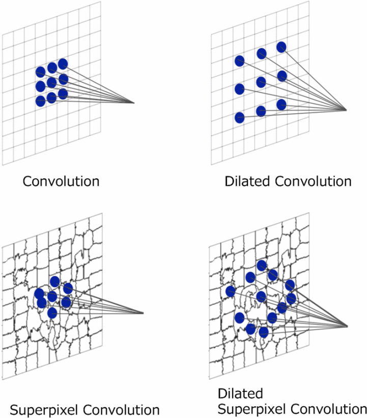

7 Assessment of classification models
7.1 Summary
This week the teaching continued on the topic of classification, focusing on aspects like object-based analysis and how we can assess classification results. Firstly, let’s look at object-based, as opposed to pixel-based analysis.
Object-based analysis utilises supercells, which are created by joining pixels into objects, according to the similarity of nearby pixels, aiming to maximise the homogeneity of pixel values within those superpixels. The methodology could also be top-down, where the whole image is divided into smaller and smaller superpixels. This for example helps with the issue of spatial autocorrelation between training and test data. To create supercells an algorithm such as Simple Linear Iterative Clustering (SLIC) can be used, which iteratively joins pixels into objects based on similarity.

Another type of analysis uses the opposite approach - sub-pixel analysis. This is relevant when a pixel could be considered as having several classes, e.g. lying at the intersection of more than one class. In such cases we can use Spectral Mixture Analysis, which estimates the proportion of different classes per pixel. This is related to probabilistic classification, where a pixel may be assigned a probability of belonging to the given class.
Accuracy Assessment
Classification accuracy assessment can be measured with several metrics. Firstly, there are the producer accuracy (recall), which is calculated as the true positive \(TP\) rate over \((TP + FP)\), and the user’s accuracy (precision), measuring the rate of pixels being misclassified per specific class - \((TP)/(TP+FP)\). The overall accuracy can be calculated from these.
The confusion matrix is a very useful tool that can often be created for a classification problem. It shows how wrong the model is through TP, TN, FP and FN rates.
Another measure of accuracy of classification is the kappa coefficient, which however is not regarded as an appropriate metric, due to several limitations. It is defined as
\[ {\displaystyle \kappa ={\frac {2\times (TP\times TN-FN\times FP)}{(TP+FP)\times (FP+TN)+(TP+FN)\times (FN+TN)}}} \]
Another metric is the F1 score, which however does not account for \(TN\). This metric aims to account for the issue of class imbalance, as it considers the relative performance. It is defined:
\[F1 = \frac{2 \times \text{TP}}{2 \times \text{TP} + \text{FP} + \text{FN}}\]
Lastly, the Receiver Operating Characteristic (ROC) Curve, which shows the accuracy of predictions using the true positive rate and false positive rate in one plot. Area under the curve gives a quantifiable measure for this method.

Another important consideration for model training is the train-test split, which is a fundamental step before training any machine learning model. It is because, only evaluating the model on unseen data can give an accurate assessment of its predictive power. Cross validation is a method that repeats this process, which involves training a model multiple times on different partitions of the dataset and evaluating it on the testing set.
To account for spatial autocorrelation of testing and training data, the use of spatial cross validation is recommended, which ensures that points from different locations are used for training and testing the model at each time, limiting the risk of data leakage due to spatial dependence of testing and training data (Karasiak et al. 2022). Furthermore, spatial partitioning can be used to distinguish regions of the study area, which often can be hierarchical.
7.2 Applications
The first interesting paper compares the performance of pixel-based vs object-based analysis using 3 different classification algorithms for agricultural land cover classification (Duro, Franklin, and Dubé 2012). The authors found a statistically significant difference is better performance of the Decision Tree algorithm, when using object-based analysis, while in pixel-based analysis the three models produced the same results. The conclusion of the paper states that although pixel-based analysis was computationally cheaper to run, there was no advantage over using either approach on this problem.
The lecture made me think about the regularity of the superpixel grid created by applying SLIC, such that the index information of column and rows is retained. This could be used for running convolutional filters on such data. A quick literature search revealed that such a method has been developed and applied to neural networks for semantic segmentation (Suzuki et al. 2018).

A very interesting approach to assessing the accuracy of a classification model was proposed by Oort et al. (2004), who argue that the spatial variability of a model’s accuracy needs to be quantified. The approach uses a 3x3 window surrounding a pixel, and the local accuracy measure is calculated from the neighbouring pixels. The authors develop this method for land-cover classification in Netherlands and find that that local accuracy was higher in regions where land-covers were more homogeneous.
7.3 Reflections
There are so many different accuracy assessment indicators, yet not one of them will ever give you the whole picture. Even if a particular indicator takes into account different error types, like the F1 score, the metric is still only a single number which doesn’t convey the whole picture.
It seems to me that for urban problems, using object-based analysis such as convolutional neural networks is more important when working with very high resolution imagery (sub-meter resolution), while it may be less important when we have low-resolution imagery like 10 meters, in which case pixel-based analysis may be more efficient. That’s because the features, which would really make a difference for identifying in an urban environment would likely be quite granular, and that’s when spatial aspect of images would be most important to consider. But of course, this depends on the particular problem.
Furthermore, in object-based analysis it is interesting to me that using a bottom-up vs top-down approach for segmentation into supercells will be more or less efficient based on the type of data we are working with. For example if we are looking to segment very detailed structure in the image, it may be quicker to arrive at the desired segmentation if starting from joining pixels into supercells. Whereas if we are working with a very high resolution images and want to segment large objects, it may make sense to use the top-down approach.These kinds of reflections are what make this course interesting.